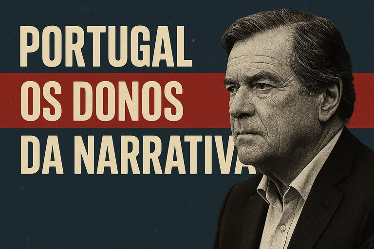

Publicado em 2025-06-20 14:01:50
Edição #1: Miguel Sousa Tavares e a indignação com GPS social
Em Portugal, o discurso público não é livre. Não é espontâneo. É produzido. Todos os dias, em colunas de jornal, entrevistas de domingo e no brilho cansado das telas da televisão, há narrativas feitas sob encomenda — e quem as faz, detém o poder invisível de controlar o que pensamos, o que sentimos e até o que podemos ou não fazer.
E quem é que está no comando deste império de palavras?
Na primeira edição desta rubrica, vamos olhar para Miguel Sousa Tavares, um homem que se auto-intitula um "pensador livre", mas cuja liberdade é, muitas vezes, uma liberdade que só existe para defender os amigos certos, as elites que o alimentam e os interesses que lhe são mais próximos.
Sousa Tavares tem uma opinião formada sobre tudo. Ele fala de Israel com uma dureza que faz crer que é o último bastião da verdade, mas sempre convenientemente se esquece de mencionar o Hamas, Hezbollah e Irão, patrocinadores do terrorismo que, em nome da resistência, cometem os piores atos de barbarismo contra civis, seja em Gaza, seja na Ucrânia.
Ele acusa a Europa de não fazer o suficiente por Israel — mas e quanto à falta de voz sobre o que está acontecendo na Ucrânia? Onde estavam os seus comentários quando civis ucranianos estavam a ser bombardeados com drones iranianos, fabricados e enviados pelo regime de Teerão?
A indignação seletiva é uma arte refinada de um homem que não esconde os interesses por trás de sua moral e das suas palavras. Mas quem protege os interesses dos amigalhaços?
Miguel Sousa Tavares sempre foi um moralista, mas as suas convenções morais, como sabemos, têm um limite — e esse limite é sempre marcado pelas suas conveniências pessoais.
É mais fácil apontar o dedo à Europa, a Israel e até aos EUA. Mas quando se trata de críticos do regime iraniano ou de regimes autoritários, o silêncio é a sua resposta preferida. O moralismo que ostenta é muitas vezes tão seletivo como a sua própria agenda.
Miguel Sousa Tavares e outros "Donos da Narrativa" detêm uma influência silenciosa, mas letal. Eles não controlam o poder através de instituições, mas sim através da opinião pública, construindo e desconstruindo realidades de acordo com o que lhes convém. Quando essas narrativas se tornam a única verdade, a sociedade deixa de ter voz e passa a agir como se fosse uma plateia passiva.
E aqui estamos nós, prontos para desmontar a farsa, semana após semana, ao trazer à tona as mentiras que moldam o presente.
“O Clubinho do Croquete: Os Novos Filantropos”
Estes são os verdadeiros donos da narrativa que nem Miguel Sousa Tavares quer ver. Estão prontos? O palco está montado!
Artigo de opinião da autoria de Augustus Veritas Lumen
“Eles não governam por decreto, governam por manchete.
Não fazem leis — fazem opiniões.
São os donos da narrativa: cronistas de elite, moralistas seletivos, e comentadores de conveniência.
Em Portugal, o poder já não está apenas no Parlamento…
Está na pena envernizada dos bem relacionados.”